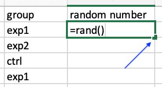
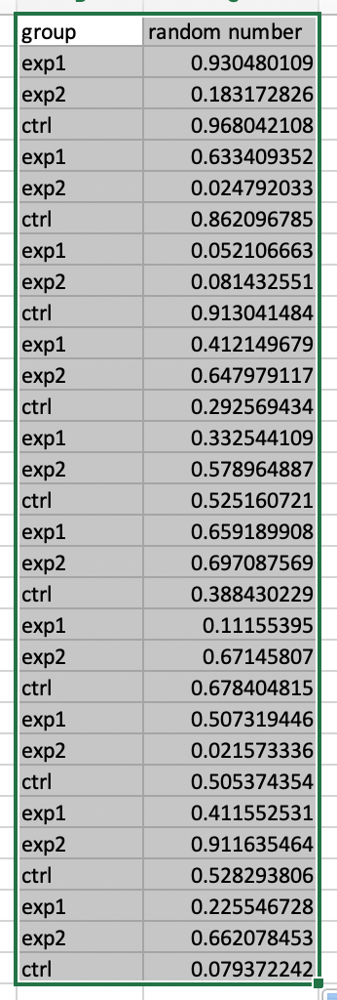

Lab 02: Randomization
Random Assignment
We could try to experimentally control all known potential confounds (e.g., gender, age, intelligence, personality, room temperature, etc.). Nonetheless, we could not pracically control for ALL variables (e.g., we might not know those variables or they are too expensive to control). Random assignment is one way to equalize those extraneous variables. When participants are randomly assigned to each group in an experiment, all person variables are equally likely to be assigned to any group (e.g., each group has about the same number of participants with high, averge, and low extraversion). Given that we have a large enough sample, as we sum up those values for each group, any variation around the means will cancel out each other (i.e., each group will have the same average extraversion). Nonetheless, random assignment does not gaurantee matched or equivalent groups. Any differences of pre-existing characteristics is due to chance. While random assignment does not completely eliminate pre-existing differences, it greatly reduce it.
In this lab, we will learn how to conduct a random assignment with three tools: Microsoft Excel, R, and a randomizer website.
1. Excel
Let’s consider an example of randomizing 30 participants to 5 groups. We could just roll a dice for each participant at the beginning of the experiment. However, we could plan the randomization before the experiment.
First, we will create two columns: group, and random number. Then fill out the group number from 1-6 and repeat this 5 times.

Then, fill random num column with a rand() function. The function will generate a random number between 0 and 1 using a uniform distribution, i.e., each value has equal chance.

Here are the results.
Then, select the entire values for both group and random num column. This is VERY important. You need to select ALL values that you want to randomly sort.

Then, sort the data with random num column.
The results will be a randomized order of group.

Then you can add an id column to assign participant to the group. (As you type into Excel, the random values will keep changing, but you can ignore them at this point.)
Randomize within a set
Sometimes you would like to run an experiment as a set, i.e., within each set you want to assign participants to every group before moving on. This setup will make sure that for each set that you run, you will have participants for all conditions.
To do this, you need group, set, and random num. Groups within the same set will have the same set value.
Next, fill the random numbers
Then, select all values and sort. In the sort option box, click + and choose the first option to sort by Column set, then by random num. This way, Excel will sort your data by set, then within each set, sort by random num.
Here are the results.
2. R code
There are multiple ways to create a vector of random values in R. The ways shown here are not exhaustive.
rep() function & sortation
First, create a vector of group numbers (1-5) for 6 times (N = 30).
unsorted_group <- rep(1:5, times = 6)
unsorted_group## [1] 1 2 3 4 5 1 2 3 4 5 1 2 3 4 5 1 2 3 4 5 1 2 3 4 5 1 2 3 4 5Then, create a random vector with sample.int().
set.seed(2475) # you can pick any value for a seed. This will help when you need to replicate the results.
random_vector <- sample.int(30, size = 30, replace = FALSE)
random_vector## [1] 30 22 23 12 26 11 7 10 20 28 13 4 16 18 24 14 25 17 29 9 1 21 6 2 27 19 15 5 8 3Sort the group with random_vector.
random_sorted <- unsorted_group[random_vector]
random_sorted## [1] 5 2 3 2 1 1 2 5 5 3 3 4 1 3 4 4 5 2 4 4 1 1 1 2 2 4 5 5 3 3You can use random_sorted to assign participants into conditions. Also, check that all groups have equal n.
table(random_sorted)## random_sorted
## 1 2 3 4 5
## 6 6 6 6 6sample.int() function and for loop
To randomize within each set, we will use sample.int() to randomize group 1-5, then repeat it with for loops for 6 times, then combine the results.
We can use sample.int() function to pick integer values from 1 to 5 (n = 5) for size = 5 times. The function will randomly select an interger from 1 to 5 without replacement. By doing this 5 times, you will get a random oder of 1-5. However, because our total sample size has N = 30, we will need to use a for loop to repeat this process 6 times (for (i in 1:6))
set.seed(2475)
s <- matrix(nrow = 5, ncol = 6) # Create a matrix, s, with 5 rows (for 5 groups) and 6 columns (for 6 sets) as a holder for future data.
for (i in 1:6) {
s[,i] <- sample.int(n = 5, size = 5, replace = FALSE) #randomize 5 groups then put them in each column
}
s # results ini matrix## [,1] [,2] [,3] [,4] [,5] [,6]
## [1,] 4 2 2 1 1 1
## [2,] 2 5 4 4 3 2
## [3,] 5 1 1 3 5 4
## [4,] 1 4 5 2 2 5
## [5,] 3 3 3 5 4 3as.integer(s) #show the matrix as interger vector. ## [1] 4 2 5 1 3 2 5 1 4 3 2 4 1 5 3 1 4 3 2 5 1 3 5 2 4 1 2 4 5 3table(as.integer(s)) #check if n are equal in all groups. ##
## 1 2 3 4 5
## 6 6 6 6 63. Randomizer Websites
There are muliple websites that offer randomization. Try